Index
graph
CLAUSE
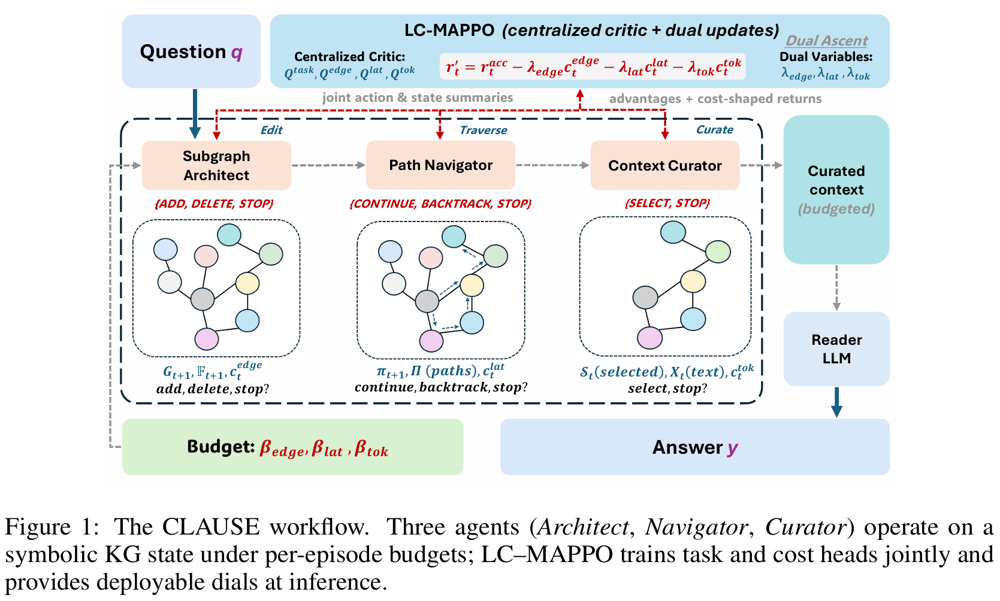
-
Subgraph Architect: 执行
add, delete, stop三种操作, 初始根据问题 \(q\) 和 entity 标签的相似度选择初始点集 \(S_0\), \(\mathcal F_0=S_0\).每一轮对于 \(\mathcal F_t\) 以及对应的从 \(u\in \mathcal F_t\) 出发的 candidate 边集, 计算增益分数, 如果一个边 \(e\), 执行 \(a\) 操作的增益大于开销, 就执行
\(\mathcal F_t\) 根据新长出来/删掉的边的 endpoint 来更新
-
Path Navigator: 从 anchor 开始遍历, 支持 backtrack. 使用一个 encoder 对于候选边 \(A_t\) 打分. 只有期望收益大于开销才会前进
-
Context Curator: 找出一个策略 \(\pi_S\), 使其选出的子集最大化收益. 如果查看某一文本的开销大于其收益, 则立即停止
-
例子:
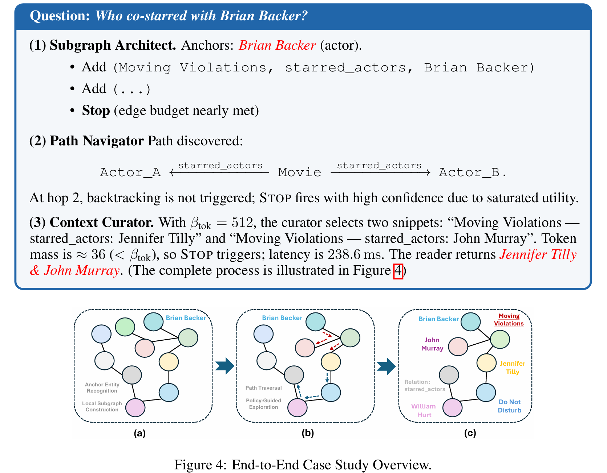
[[Clause]]
BrowseNet
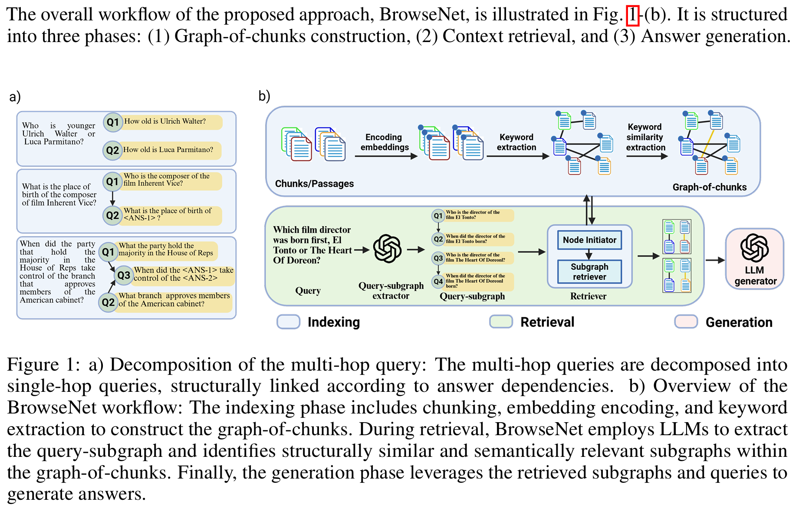
-
graph construction: 用一个模型 NER 识别出一个 document 中的所有标签, 用另一个模型计算文章标签之间的 similarity, 大于阈值就建边
两个模型都是 BERT-based
-
query-subgraph: 用 GPT 做 multi-hop query decomposition
-
retrieval: 对于拓扑序的初始节点, 对图中每个 chunk 计算与 multihop, singlehop 之间的相似度分数, 选取 top-\(k\) 的 chunk
对于非初始节点, 假设 query-subgraph 中有 \(p\) 个父亲节点, 每个父亲节点有 \(k\) 个 candidate chunk, 因此分别考虑 \(k^p\) 种组合, 对于每种组合, 当前 chunk 的 candicate 为 \(p\) 个父亲 chunk 的邻居, 整体集合为 \(U\). 从这些邻居中选择与当前节点代表的 singlehop query 最相关的一个 chunk, 附加在后面作为一个 modified query, 之后对 \(U\) 中每个 chunk 计算与 multihop, singlehop, modified hop 之间的相似度, 选 top-k 个 chunk.
现在有 \(k^{p+1}\) 个 subgraphs, 计算这个子图的分数 \(weight_{SG}=\sum_i \frac{SS_{c_i}}{depth_{c_i}}\), 即越接近初始节点权重越大
选择 \(top-k\) 个子图, 其中的点对应的 document 作为召回的信息
[[BrowseNet]]
GraphBasedAgentMemory
index
文章结构
- INTRODUCTION
- PRELIMINARIES
- TAXONOMY OF AGENT MEMORY
- MEMORY EXTRACTION:TRANSFORMING THE DATA
- MEMORY STORAGE: ORGANIZING THE MIND
- MEMORY RETRIEVAL: RECALLING THE PAST
- MEMORY EVOLUTION: LEARNING OVER TIME
- OPEN-SOURCED LIBRARIES AND BENCHMARKS
- APPLICATIONS
- LIMITATIONS AND FUTURE DIRECTIONS
- CONCLUSION
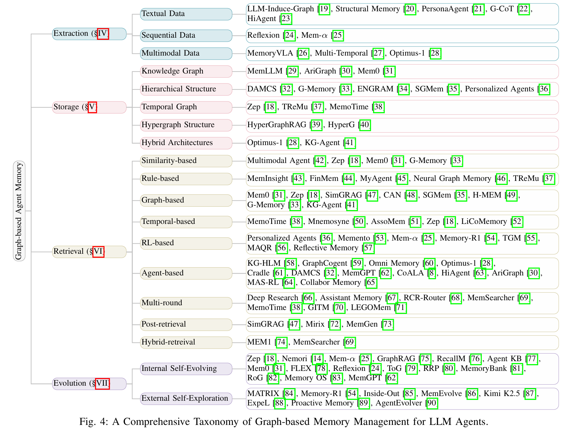
storage
- KG: 基于 LLM 建边
- hierarchical: 语义聚类 + 递归总结
- TKG: 三元组 (entity, relation, entity) -> 四元组 (entity, relation, entity, timestamp)
- Hyper: 二元的点对点可能难以表示复杂关系, 所以用超图, 一个边链接多个点 (算法复杂)
- Hybird: 动态 (memory) 与静态 (RAG) 结合
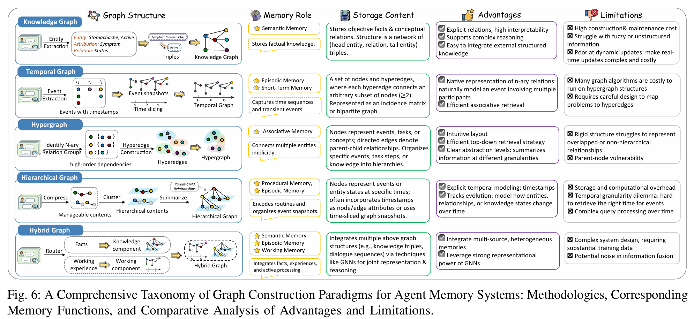
retrieval
- 基本: BFS/DFS, 最短路, 随机游走, PageRank
- 时间: 在 TKG 上执行时间受限的基本算法
- RL: 根据策略进行游走
- Agent: LLM 规划, 相比 RL 可调用工具
evolution
internal:
- 消除冗余 (缩点/语义聚类), 解决冲突
- 图推理: 预测潜在链接, 归纳性的知识富集
- 剪枝; 重组, 包括调整边权值/节点之间创建 shortcut
external:
- 与用户/环境交互, 根据结果即时奖励/惩罚反馈到图上
- 主动询问, 例如多跳询问时遇到问题上网查/问用户, 形成新的节点/边
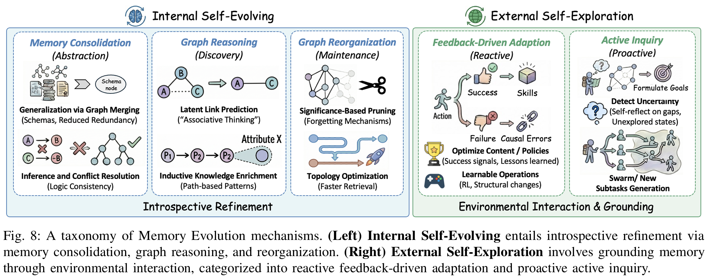
limitation & thoughts
-
图的效率
- 缩点/语义聚类: HNSW, 兼顾效率和 hierarchical; 路由算法
- 避免完全由 LLM 进行建边/遍历, 可以 rule-based, 但也要 theory-based; 或者增量式更新
-
图的结构合理性
-
除了 knowledge graph 以外的其他图结构, 如 causal graph? 边权为计算得到的因果效应等
e.g.
Query: "为什么我最近测量血压升高了？给我一个可操作的解释和建议"
A: "血压测量注意事项：使用电子血压计时要保持坐姿、胳膊与心脏同高，每天固定时间测量，避免咖啡因和剧烈运动后立即测。正确测量方法能让读数更准确。" (相似但不相关)
B: "最近你的记录显示体重也上升了约 2.5kg。统计数据显示，体重读数与血压读数呈现显著正相关（r > 0.7）。因此，体重增加很可能是导致血压升高的主要原因" (相关但没有因果关系)
C: "用户高盐饮食（每天钠摄入 > 3000mg）→ 肾脏钠潴留 → 血容量增加 → 血压升高（结构方程：血压 = 0.75 × 钠摄入量 + 0.2 × 压力 + ε）。临床研究显示，减少盐摄入 30% 可使收缩压平均下降 5–8 mmHg。" (有因果关系)
-
评价指标, structual, temporal, semantic
-
[[GraphBasedAgentMemory]]
cognitive neuroscience
AIMeetsBrain
index
- INTRODUCTION
- MEMORY DEFINITIONS
- MEMORY UTILITY
- MEMORY CATEGORIZATION
- MEMORY STORAGE
- MEMORY MANAGEMENT (retrieval, updating, extraction)
- BENCHMARKS FOR AGENT MEMORY
- SECURITY OF AGENT MEMORY
- FUTURE DISCUSSION
- CONCLUSION
memory storage
neuro:
- shor-term memory: 持续放电/突触权重: 相关节点被激活, 放到 context 中; 走过的路径权值暂时升高, 短期内更容易回忆
- long-term memory: 事件单元/认知地图: 图上新建节点; 根据 latent 向量计算距离 (相似度?)
agent:
- 存储: text/graph/parameter
memory retrieval
- pattern completion: 与过去经历相似的局部刺激 (parameter memory/graph 中路径边权增强)
memory update
- 跨任务更新, 在记忆库中找到旧的信息, 进行覆盖、合并或标记为过时
memory extraction
- Generative Extraction: 图推理, 推理出新的知识
application
- 参数内化: 将记忆编码到参数中 (微调复杂度)
limitation & thoughts
-
multimodal memory storage
- 存储介质, 情景记忆 (Episodic Memory) 中除了图/文本以外, multimodal/symbolic memories (timestamps, frame or clip-level captions, object categories)
-
多 agent 协作时的 skill transfer / memory sharing
[[AIMeetsBrain]]
hypergraph
HyperMem
construction
分成 fact -> episode -> topic 三层
episode 即为最普通的 episode memory
根据 episode 的相似度进行语义聚类, 总结出 topic, 这个 topic 下的所有 episode 用一个超边连接
根据一个 topic 下的所有 episode 拆分成 fact, 对于每个 episode 匹配所有相关的 fact, 形成一个超边
retrieval
-
hypergraph embedding aggregation
迭代
这里是提取出的所有公式，用 Markdown 内嵌 LaTeX 格式呈现：
\[ \begin{aligned} \boldsymbol{h}_e &= \sum_{v \in \mathcal{V}(e)} \alpha_{e,v} \boldsymbol{h}_v, \\ \alpha_{e,v} &= \frac{\exp(w_{e,v})}{\sum_{u \in \mathcal{V}(e)} \exp(w_{e,u})}, \end{aligned} \]\[ \boldsymbol{h}'_v = \boldsymbol{h}_v + \lambda \cdot \text{Agg}_{e \in \mathcal{N}(v)}(\boldsymbol{h}_e), \]启发源自于 hypergraph neural network?
-
online retrieval
使用 RRF 函数
\[ \text{RRF}(d) = \sum_{m=1}^{M} \frac{1}{k + \text{rank}_m(d)} \]
generation
context 里面放 fact, summary 里面放 episode
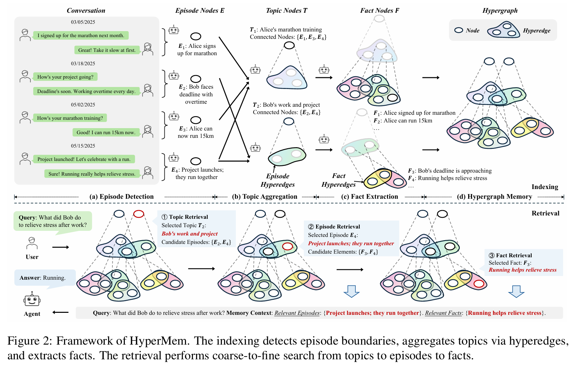
HyperGraphRAG
proposition
证明了超图的表示能力比普通图强, 超图的二分图存储是无损的, 超图的 retrieval efficiency 比普通图高
第二条是因为二分图方便存储
第三条使用信息论/编码论证明
construction
提取 N 元关系, 组成一个超边 (带权重)
retrieval
基于与询问 \(q\) 的 similarity 进行 retrieval
generation
通过融合 retrieval 的近邻加上 chunk text 作为知识来进行生成
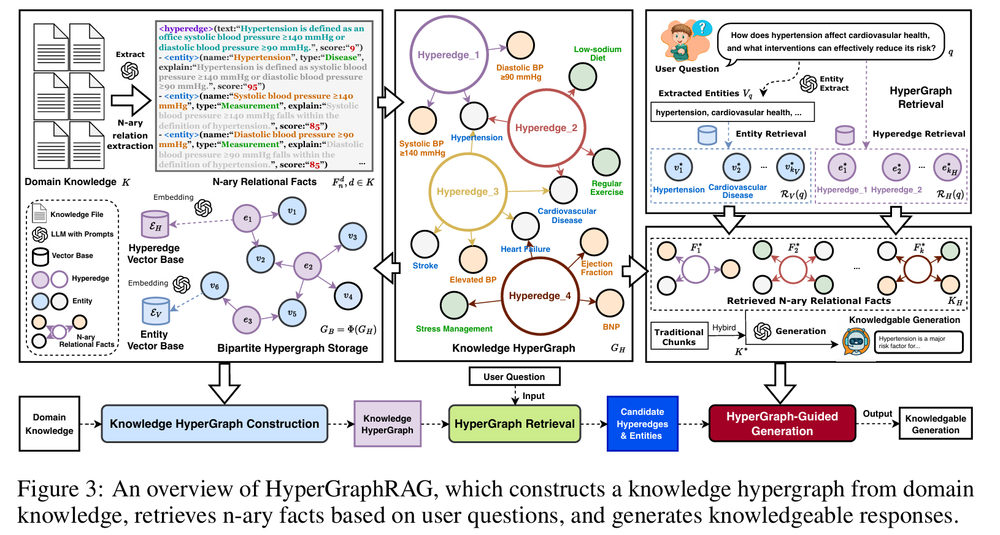
HyperG
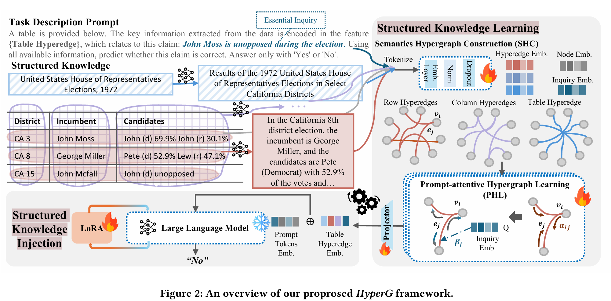
Prompt-attentive Hypergraph Learning (PHL)
先从点到边, 再从边到点, 从边到点的过程带上了 prompt
对于每一个节点定义多头注意力机制, 每个头的权重为:
之后对于超边, 对多头注意力求和得到新的 representation:
之后用线性层, 残差链接:
对于从边到点, 类似于从点到边, 带上了 prompt 的 embedding 进行计算:
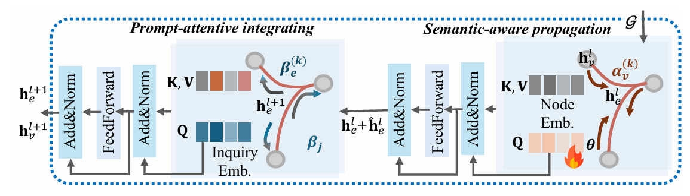
![[HyperG]]
HGMem
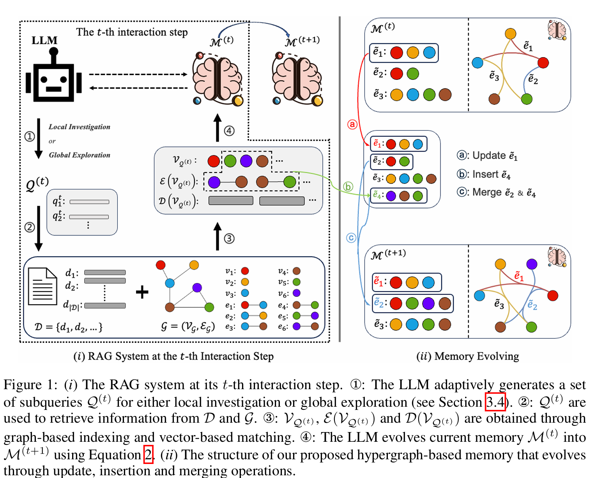
针对文档 \(\mathcal D\), 使用 LightRAG 生成一个普通图 \(\mathcal G\); 每一步从这个文档中提取合适的信息更新当前记忆 \(\mathcal M^{(t)}\)
construction
多步 RAG, 每一步通过检查当前记忆是否足够回答询问, 如果不够就更新记忆
retrieval
包括 local investigation 和 global exploration, 决定获取 \(\mathcal V_{\mathcal Q^{(t)}}\) 中 \(\mathcal V_{\mathcal G}\) 的范围
evolving
包含 insert, update, merge
![[HGMem]]
Improving Multi-step RAG with Hypergraph-based Memory for Long-Context Complex Relational Modeling
HyperMem: Hypergraph Memory for Long-Term Conversations
HyperGraphRAG: Retrieval-Augmented Generation via Hypergraph-Structured Knowledge Representation
HyperG: Hypergraph-Enhanced LLMs for Structured Knowledge
Hypergraph-Based Recognition Memory Model for Lifelong Experience